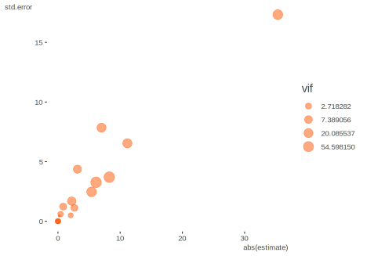

A plan of attack
Prerequisite: Knowledge of regression modeling. Helpful would be to know something about mixed models and optimization.
Primary packages used:
library(tidyverse)
library(lme4)
library(mixedup) # http://m-clark.github.io/mixedupThough the following regards an example with the R package lme4, most of it would potentially apply to any complex modeling situation where convergence problems arise. The goal is provide some steps one can take to get their models back on track. The running example is taken from the data posted at this stackoverflow question. Ben Bolker’s1 response there can be seen as the basis for this post, along with some extensions, updates and other organization.
You can download the data from here (RDS file), or go to the stackoverflow discussion and paste the code there. There isn’t any real explanation of the variables unfortunately, though you can get a sense of some of them (e.g. Day, replicate, temperature, etc.).
# df = readRDS('https://github.com/m-clark/m-clark.github.io/raw/master/data/convergence.RDS')
df = df %>%
mutate(
SUR.ID = factor(SUR.ID),
replicate = factor(replicate),
Unit = factor(1:n())
)
$`Numeric Variables`
Variable N Mean SD Min Q1 Median Q3 Max Missing
1 ValidDetections 220 6.49 10.09 0.00 0.00 1.00 7.00 45.00 0
2 CountDetections 220 6.85 10.13 0.00 0.00 2.00 7.00 45.00 0
3 FalseDetections 220 0.36 0.73 0.00 0.00 0.00 0.00 4.00 0
4 R.det 220 0.52 0.47 0.00 0.00 0.68 1.00 1.00 0
5 c.receiver.depth 220 -0.06 0.31 -0.40 -0.34 -0.18 0.21 0.55 0
6 c.tm.depth 220 -0.01 0.48 -0.62 -0.55 0.03 0.40 0.78 0
7 c.temp 220 -0.46 2.38 -4.22 -3.62 0.54 1.55 2.84 0
8 c.wind 220 -0.26 3.29 -2.97 -2.97 -2.94 1.28 5.88 0
9 c.distance 220 -6.36 128.87 -160.00 -110.00 -10.00 90.00 190.00 0
$`Categorical Variables`
# A tibble: 14 x 4
Variable Group Frequency `%`
<chr> <chr> <int> <dbl>
1 SUR.ID 10185 74 34
2 SUR.ID 10186 74 34
3 SUR.ID 10250 72 33
4 tm CT 110 50
5 tm PT-04 110 50
6 replicate 1 120 55.
7 replicate 2 100 45
8 Area Drug Channel 120 55.
9 Area Finger 100 45
10 Day 03/06/13 60 27
11 Day 2/22/13 60 27
12 Day 2/27/13 60 27
13 Day 3/14/13 28 13
14 Day 2/26/13 12 5 The following is the model that led to the stackoverflow post. It’s fairly complicated with multiple interactions and random effects, modeling the proportion of valid detections via a binomial model. The Unit effect is used to account for overdispersion, a common issue in count modeling.
m_init = glmer(
cbind(ValidDetections, FalseDetections) ~
tm:Area + tm:c.distance + c.distance:Area + c.tm.depth:Area +
c.receiver.depth:Area + c.temp:Area + c.wind:Area + c.tm.depth +
c.receiver.depth + c.temp + c.wind + tm + c.distance + Area + replicate +
(1|SUR.ID) + (1|Day) + (1|Unit),
data = df,
family = binomial(link = logit)
)
Warning in checkConv(attr(opt, "derivs"), opt$par, ctrl = control$checkConv, : Model failed to converge with max|grad| =
0.131568 (tol = 0.001, component 1)
Warning in checkConv(attr(opt, "derivs"), opt$par, ctrl = control$checkConv, : Model is nearly unidentifiable: very large eigenvalue
- Rescale variables?;Model is nearly unidentifiable: large eigenvalue ratio
- Rescale variables?This gives several warnings, the more egregious of which is that the model has not converged, meaning the estimates may not be trustworthy. So what do we do?
The first step is to step back and look at the data. Are there issues? Are some essentially collinear with others? In the following, we can see that distance and receiver depth are both notably correlated with each other and with other predictor variables.
We can obtain a rough metric of total correlation of a variable with the others by looking at the variance inflation factor (VIF). We can use the car package for this. If we just try it with a dummy model, we get an error, since the lm model has perfect collinearity. We can find out that Day is probably causing issues, and we’ll see why later.
# the model used to acquire the vif doesn't matter- anything could be used for
# the target variable
# this produces errors about aliased coefficients
# car::vif(lm(CountDetections ~ . - Unit - FalseDetections - ValidDetections, dat = df))
attributes(alias(
lm(
CountDetections ~ . - Unit - FalseDetections - ValidDetections,
dat = df
)
)$Complete)$dimnames[[1]]
[1] "Day3/14/13" "c.wind"
car::vif(lm(CountDetections ~ . -Unit -Day -FalseDetections, dat = df))
GVIF Df GVIF^(1/(2*Df))
SUR.ID 1.200902 2 1.046832
tm 1.066227 1 1.032583
ValidDetections 2.708644 1 1.645796
replicate 1.057540 1 1.028368
Area 5.795510 1 2.407387
R.det 2.393891 1 1.547220
c.receiver.depth 8.674740 1 2.945291
c.tm.depth 13.438407 1 3.665843
c.temp 2.956315 1 1.719394
c.wind 3.041363 1 1.743950
c.distance 2.065335 1 1.437127It looks like, along with Day, tm.depth is probably going to cause a problem, as more than 90% of its variance is accounted for by the other covariates2. So at this point we can consider both it and Day as potential predictors to remove.
Start with the simplest but still plausible model. If we just look at a GLM without any random effects, can we spot any issues?
m_glm = glm(
cbind(ValidDetections, FalseDetections) ~
tm:Area + tm:c.distance + c.distance:Area + c.tm.depth:Area +
c.receiver.depth:Area + c.temp:Area + c.wind:Area + c.tm.depth +
c.receiver.depth + c.temp + c.wind + tm + c.distance + Area + replicate +
SUR.ID + Day,
data = df,
family = binomial(link = logit)
)
summary(m_glm)
Call:
glm(formula = cbind(ValidDetections, FalseDetections) ~ tm:Area +
tm:c.distance + c.distance:Area + c.tm.depth:Area + c.receiver.depth:Area +
c.temp:Area + c.wind:Area + c.tm.depth + c.receiver.depth +
c.temp + c.wind + tm + c.distance + Area + replicate + SUR.ID +
Day, family = binomial(link = logit), data = df)
Deviance Residuals:
Min 1Q Median 3Q Max
-2.739 0.000 0.000 0.539 2.161
Coefficients: (3 not defined because of singularities)
Estimate Std. Error z value Pr(>|z|)
(Intercept) -1.125e+01 6.504e+00 -1.730 0.08372 .
c.tm.depth -8.406e-01 1.228e+00 -0.684 0.49376
c.receiver.depth 7.026e+00 7.852e+00 0.895 0.37095
c.temp -5.514e+00 2.538e+00 -2.172 0.02983 *
c.wind -6.256e+00 3.349e+00 -1.868 0.06179 .
tmPT-04 -2.053e+00 4.961e-01 -4.139 3.5e-05 ***
c.distance -3.685e-03 2.614e-03 -1.410 0.15864
AreaFinger 5.901e+01 2.775e+01 2.127 0.03346 *
replicate2 2.700e+00 1.161e+00 2.326 0.02000 *
SUR.ID10186 -2.227e-01 4.456e-01 -0.500 0.61721
SUR.ID10250 -2.995e-01 4.469e-01 -0.670 0.50281
Day2/22/13 -7.114e+01 3.463e+01 -2.054 0.03996 *
Day2/26/13 3.306e+00 1.134e+03 0.003 0.99767
Day2/27/13 NA NA NA NA
Day3/14/13 NA NA NA NA
tmPT-04:AreaFinger 4.308e-01 6.066e-01 0.710 0.47759
tmPT-04:c.distance -5.332e-03 3.186e-03 -1.674 0.09419 .
AreaFinger:c.distance 1.192e-02 3.855e-03 3.091 0.00199 **
AreaFinger:c.tm.depth -2.815e+00 4.731e+00 -0.595 0.55189
AreaFinger:c.receiver.depth -3.211e+01 2.545e+01 -1.262 0.20708
AreaFinger:c.temp 2.377e+00 1.902e+00 1.250 0.21141
AreaFinger:c.wind NA NA NA NA
---
Signif. codes: 0 '***' 0.001 '**' 0.01 '*' 0.05 '.' 0.1 ' ' 1
(Dispersion parameter for binomial family taken to be 1)
Null deviance: 334.57 on 137 degrees of freedom
Residual deviance: 135.23 on 119 degrees of freedom
AIC: 253.65
Number of Fisher Scoring iterations: 17Sure enough, there are problems. What’s with Day/Area? The issue is that Area only couples with certain Days, thus having one tells you most about what the other could tell you.
with(df, table(Day, Area))
Area
Day Drug Channel Finger
03/06/13 60 0
2/22/13 0 60
2/26/13 0 12
2/27/13 60 0
3/14/13 0 28Let’s take Day out, for example.
m_glm = glm(
cbind(ValidDetections, FalseDetections) ~
tm:Area + tm:c.distance + c.distance:Area + c.tm.depth:Area +
c.receiver.depth:Area + c.temp:Area + c.wind:Area + c.tm.depth +
c.receiver.depth + c.temp + c.wind + tm + c.distance + Area + replicate +
SUR.ID, # + Day,
data = df,
family = binomial(link=logit)
)
summary(m_glm)
Call:
glm(formula = cbind(ValidDetections, FalseDetections) ~ tm:Area +
tm:c.distance + c.distance:Area + c.tm.depth:Area + c.receiver.depth:Area +
c.temp:Area + c.wind:Area + c.tm.depth + c.receiver.depth +
c.temp + c.wind + tm + c.distance + Area + replicate + SUR.ID,
family = binomial(link = logit), data = df)
Deviance Residuals:
Min 1Q Median 3Q Max
-2.7693 0.0000 0.0000 0.5335 2.1586
Coefficients:
Estimate Std. Error z value Pr(>|z|)
(Intercept) -10.980797 6.323591 -1.736 0.08248 .
c.tm.depth -0.842695 1.227579 -0.686 0.49242
c.receiver.depth 7.003401 7.846631 0.893 0.37211
c.temp -5.407822 2.465579 -2.193 0.02828 *
c.wind -6.125119 3.266203 -1.875 0.06075 .
tmPT-04 -2.049088 0.495012 -4.139 3.48e-05 ***
c.distance -0.003755 0.002586 -1.452 0.14644
AreaFinger 11.163412 6.537806 1.708 0.08773 .
replicate2 2.646675 1.120176 2.363 0.01814 *
SUR.ID10186 -0.223527 0.445491 -0.502 0.61584
SUR.ID10250 -0.300337 0.446936 -0.672 0.50159
tmPT-04:AreaFinger 0.425446 0.605567 0.703 0.48233
tmPT-04:c.distance -0.005304 0.003175 -1.670 0.09483 .
AreaFinger:c.distance 0.011937 0.003849 3.101 0.00193 **
AreaFinger:c.tm.depth -3.137815 4.366782 -0.719 0.47241
AreaFinger:c.receiver.depth -35.342161 17.332674 -2.039 0.04145 *
AreaFinger:c.temp 2.222685 1.682491 1.321 0.18648
AreaFinger:c.wind 8.259864 3.700848 2.232 0.02562 *
---
Signif. codes: 0 '***' 0.001 '**' 0.01 '*' 0.05 '.' 0.1 ' ' 1
(Dispersion parameter for binomial family taken to be 1)
Null deviance: 334.57 on 137 degrees of freedom
Residual deviance: 135.27 on 120 degrees of freedom
AIC: 251.69
Number of Fisher Scoring iterations: 10Those familiar with such models can still see that some of these coefficients and their associated standard errors are exceedingly large for this setting, so we shouldn’t really be surprised there might be issues with more complicated models. This is usually a sign of collinearity/separation with binary outcomes, and may be so here as well.
| term | estimate | std.error | statistic | p.value | vif |
|---|---|---|---|---|---|
| c.receiver.depth | 7.003 | 7.847 | 0.893 | 0.372 | 449.530 |
| c.wind | -6.125 | 3.266 | -1.875 | 0.061 | 7765.822 |
| AreaFinger | 11.163 | 6.538 | 1.708 | 0.088 | 594.014 |
| AreaFinger:c.receiver.depth | -35.342 | 17.333 | -2.039 | 0.041 | 1895.488 |
| AreaFinger:c.wind | 8.260 | 3.701 | 2.232 | 0.026 | 8011.023 |

At this point I would not assume anything about the mixed model approach being a problem, and be leaning toward this being primarily a data issue. Let’s being our mixed model effort restart by pulling some of those we thought had some collinearity issues. You might have noticed from the GLM that SUR.ID was only 3 levels, so let’s move that to a fixed effect also. In keeping things simple, I’m not including any interactions.
model_mixed1 = glmer(
cbind(ValidDetections, FalseDetections) ~
# tm:Area + tm:c.distance + c.distance:Area + #c.tm.depth:Area +
# c.receiver.depth:Area + c.temp:Area + c.wind:Area + #c.tm.depth +
c.receiver.depth + c.temp + c.wind + tm + c.distance + Area + replicate +
SUR.ID +
(1|Unit), # + (1|Day)
data = df,
family = binomial(link=logit)
)
Warning in checkConv(attr(opt, "derivs"), opt$par, ctrl = control$checkConv, : Model failed to converge with max|grad| =
0.117672 (tol = 0.001, component 1)
summarize_model(model_mixed1, ci = FALSE)
Group Effect Variance SD Var_prop
Unit Intercept 0.90 0.95 1.00
Term Value SE Z P_value Lower_2.5 Upper_97.5
Intercept 2.39 0.73 3.26 0.00 0.95 3.82
c.receiver.depth -3.80 1.08 -3.53 0.00 -5.91 -1.69
c.temp 0.25 0.19 1.28 0.20 -0.13 0.63
c.wind 0.13 0.15 0.88 0.38 -0.16 0.43
tmPT-04 -1.36 0.36 -3.77 0.00 -2.07 -0.65
c.distance -0.01 0.00 -5.09 0.00 -0.01 -0.01
AreaFinger 1.22 0.62 1.99 0.05 0.02 2.43
replicate2 -0.39 0.37 -1.05 0.29 -1.11 0.33
SUR.ID10186 -0.13 0.55 -0.23 0.82 -1.20 0.95
SUR.ID10250 -0.20 0.54 -0.36 0.72 -1.26 0.87Well, we still have issues, so what else can we try?
Let’s go ahead with the easy part and rescale our variables, which might as well be done with any model. I will standardize the numeric variables.
sc = function(x) scale(x)[, 1]
df = df %>%
mutate(
c.receiver.depth_sc = sc(c.receiver.depth),
c.tm.depth_sc = sc(c.tm.depth),
c.temp_sc = sc(c.temp),
c.wind_sc = sc(c.wind),
c.distance_sc = sc(c.distance),
)
model_mixed2 = glmer(
cbind(ValidDetections, FalseDetections) ~
# tm:Area + tm:c.distance_sc + c.distance_sc:Area +
# c.receiver.depth_sc:Area + c.temp_sc:Area + c.wind_sc:Area +
c.receiver.depth_sc + c.temp_sc + c.wind_sc + tm + c.distance_sc + Area + replicate +
SUR.ID +
(1|Unit),
data = df,
family = binomial(link=logit)
)
Warning in checkConv(attr(opt, "derivs"), opt$par, ctrl = control$checkConv, : Model failed to converge with max|grad| =
0.135829 (tol = 0.001, component 1)
summarize_model(model_mixed2, ci=FALSE)
Group Effect Variance SD Var_prop
Unit Intercept 0.87 0.93 1.00
Term Value SE Z P_value Lower_2.5 Upper_97.5
Intercept 2.48 0.69 3.59 0.00 1.13 3.84
c.receiver.depth_sc -1.18 0.33 -3.56 0.00 -1.83 -0.53
c.temp_sc 0.58 0.45 1.27 0.20 -0.31 1.47
c.wind_sc 0.42 0.49 0.86 0.39 -0.54 1.38
tmPT-04 -1.36 0.36 -3.78 0.00 -2.07 -0.66
c.distance_sc -1.19 0.23 -5.15 0.00 -1.64 -0.74
AreaFinger 1.23 0.61 2.01 0.04 0.03 2.43
replicate2 -0.39 0.37 -1.07 0.28 -1.11 0.33
SUR.ID10186 -0.11 0.54 -0.20 0.84 -1.17 0.95
SUR.ID10250 -0.19 0.54 -0.35 0.73 -1.25 0.87So at least we have the rescaling taken care of. What can we check for next? I looked to see if there was further imbalance of any categorical variables, and didn’t spot much issue. But then discovered something else. A couple covaraites: c.wind and c.distance have only five unique values, and for the former, some of those values only occur a few times. In addition, it was unique per day, so was completely confounded with it. So we can feel fine with having removed Day.
map_int(df %>% select(-ends_with('sc')), n_distinct)
SUR.ID tm ValidDetections CountDetections FalseDetections replicate Area
3 2 35 35 5 2 2
Day R.det c.receiver.depth c.tm.depth c.temp c.wind c.distance
5 21 30 31 37 5 5
Unit
220
table(df$c.wind, df$Day)
03/06/13 2/22/13 2/26/13 2/27/13 3/14/13
-2.96855001 0 60 0 0 0
-2.939182972 0 0 0 60 0
1.27535159 60 0 0 0 0
4.71144999 0 0 12 0 0
5.88092439 0 0 0 0 28If we treat these as categorical what happens? I’ll do it just for the glm.
m_glmodel_mixed2 = glm(
cbind(ValidDetections, FalseDetections) ~
# tm:Area + tm:c.distance_sc + c.distance_sc:Area +
# c.receiver.depth_sc:Area + c.temp_sc:Area + c.wind_sc:Area +
c.receiver.depth_sc + c.temp_sc + factor(c.wind_sc) + tm + factor(c.distance_sc) + Area + replicate +
SUR.ID ,
data = df,
family = binomial(link=logit)
)
summary(m_glmodel_mixed2)
Call:
glm(formula = cbind(ValidDetections, FalseDetections) ~ c.receiver.depth_sc +
c.temp_sc + factor(c.wind_sc) + tm + factor(c.distance_sc) +
Area + replicate + SUR.ID, family = binomial(link = logit),
data = df)
Deviance Residuals:
Min 1Q Median 3Q Max
-3.4641 0.0000 0.0000 0.5706 2.1259
Coefficients: (1 not defined because of singularities)
Estimate Std. Error z value Pr(>|z|)
(Intercept) 7.8190 2.2057 3.545 0.000393 ***
c.receiver.depth_sc 1.3883 2.1912 0.634 0.526349
c.temp_sc -2.3820 1.4315 -1.664 0.096116 .
factor(c.wind_sc)-0.815958036457522 -5.0028 4.0691 -1.229 0.218901
factor(c.wind_sc)0.466596887276021 -7.8429 2.9788 -2.633 0.008466 **
factor(c.wind_sc)1.51226037787547 17.9094 1180.6959 0.015 0.987898
factor(c.wind_sc)1.8681514324712 -9.1668 6.3781 -1.437 0.150654
tmPT-04 -1.2459 0.2823 -4.413 1.02e-05 ***
factor(c.distance_sc)-0.804187179848272 -0.3953 0.3908 -1.011 0.311786
factor(c.distance_sc)-0.0282170940297639 -0.9887 0.4110 -2.405 0.016162 *
factor(c.distance_sc)0.747752991788744 -0.8547 0.5253 -1.627 0.103694
factor(c.distance_sc)1.52372307760725 -3.2681 0.7664 -4.264 2.01e-05 ***
AreaFinger NA NA NA NA
replicate2 0.7647 0.5249 1.457 0.145120
SUR.ID10186 -0.1224 0.4384 -0.279 0.780057
SUR.ID10250 -0.2700 0.4363 -0.619 0.536010
---
Signif. codes: 0 '***' 0.001 '**' 0.01 '*' 0.05 '.' 0.1 ' ' 1
(Dispersion parameter for binomial family taken to be 1)
Null deviance: 334.57 on 137 degrees of freedom
Residual deviance: 146.17 on 123 degrees of freedom
AIC: 256.59
Number of Fisher Scoring iterations: 17Ah! So now we see that if we have wind, Area is completely accounted for with it and other factors.
table(df$c.wind, df$Area)
Drug Channel Finger
-2.96855001 0 60
-2.939182972 60 0
1.27535159 60 0
4.71144999 0 12
5.88092439 0 28
m_glmodel_mixed3 = glm(
cbind(ValidDetections, FalseDetections) ~
# tm:Area + tm:c.distance_sc + c.distance_sc:Area +
# c.receiver.depth_sc:Area + c.temp_sc:Area + c.wind_sc:Area +
c.receiver.depth_sc + c.temp_sc + factor(c.wind_sc) + tm + factor(c.distance_sc) + #Area +
replicate + SUR.ID ,
data = df,
family = binomial(link=logit)
)
summary(m_glmodel_mixed3)
Call:
glm(formula = cbind(ValidDetections, FalseDetections) ~ c.receiver.depth_sc +
c.temp_sc + factor(c.wind_sc) + tm + factor(c.distance_sc) +
replicate + SUR.ID, family = binomial(link = logit), data = df)
Deviance Residuals:
Min 1Q Median 3Q Max
-3.4641 0.0000 0.0000 0.5706 2.1259
Coefficients:
Estimate Std. Error z value Pr(>|z|)
(Intercept) 7.8190 2.2057 3.545 0.000393 ***
c.receiver.depth_sc 1.3883 2.1912 0.634 0.526349
c.temp_sc -2.3820 1.4315 -1.664 0.096116 .
factor(c.wind_sc)-0.815958036457522 -5.0028 4.0691 -1.229 0.218901
factor(c.wind_sc)0.466596887276021 -7.8429 2.9788 -2.633 0.008466 **
factor(c.wind_sc)1.51226037787547 17.9094 1180.6959 0.015 0.987898
factor(c.wind_sc)1.8681514324712 -9.1668 6.3781 -1.437 0.150654
tmPT-04 -1.2459 0.2823 -4.413 1.02e-05 ***
factor(c.distance_sc)-0.804187179848272 -0.3953 0.3908 -1.011 0.311786
factor(c.distance_sc)-0.0282170940297639 -0.9887 0.4110 -2.405 0.016162 *
factor(c.distance_sc)0.747752991788744 -0.8547 0.5253 -1.627 0.103694
factor(c.distance_sc)1.52372307760725 -3.2681 0.7664 -4.264 2.01e-05 ***
replicate2 0.7647 0.5249 1.457 0.145120
SUR.ID10186 -0.1224 0.4384 -0.279 0.780057
SUR.ID10250 -0.2700 0.4363 -0.619 0.536010
---
Signif. codes: 0 '***' 0.001 '**' 0.01 '*' 0.05 '.' 0.1 ' ' 1
(Dispersion parameter for binomial family taken to be 1)
Null deviance: 334.57 on 137 degrees of freedom
Residual deviance: 146.17 on 123 degrees of freedom
AIC: 256.59
Number of Fisher Scoring iterations: 17The remaining collinearity is due to the relatively few observations for that value of wind, but at least most of the other covariates effects have settled down.
df = df %>%
mutate(wind = fct_lump(factor(c.wind), 3, other_level = 'Higher'))
table(df$wind)
-2.96855001 -2.939182972 1.27535159 Higher
60 60 60 40
model_mixed3 = glmer(
cbind(ValidDetections, FalseDetections) ~
# tm:Area + tm:c.distance_sc + c.distance_sc:Area +
# c.receiver.depth_sc:Area + c.temp_sc:Area + c.wind_sc:Area +
c.receiver.depth_sc + c.temp_sc + wind + tm + factor(c.distance) + #Area +
replicate + SUR.ID +
(1|Unit),
data = df,
family = binomial(link=logit)
)
summarize_model(model_mixed3, ci=FALSE)
Group Effect Variance SD Var_prop
Unit Intercept 0.78 0.88 1.00
Term Value SE Z P_value Lower_2.5 Upper_97.5
Intercept 3.67 1.16 3.16 0.00 1.40 5.94
c.receiver.depth_sc -3.02 1.40 -2.16 0.03 -5.76 -0.28
c.temp_sc -1.72 1.70 -1.02 0.31 -5.05 1.60
wind-2.939182972 2.73 2.87 0.95 0.34 -2.89 8.35
wind1.27535159 -4.20 2.88 -1.46 0.14 -9.85 1.44
windHigher 4.41 2.81 1.57 0.12 -1.10 9.92
tmPT-04 -1.31 0.36 -3.65 0.00 -2.01 -0.60
factorc.distance-110 -0.62 0.48 -1.31 0.19 -1.56 0.31
factorc.distance-10 -1.44 0.50 -2.87 0.00 -2.42 -0.45
factorc.distance90 -1.23 0.62 -1.97 0.05 -2.44 -0.01
factorc.distance190 -4.21 0.96 -4.39 0.00 -6.09 -2.33
replicate2 0.20 0.58 0.34 0.73 -0.93 1.33
SUR.ID10186 -0.06 0.54 -0.12 0.90 -1.12 0.99
SUR.ID10250 -0.16 0.54 -0.30 0.76 -1.21 0.89Checking variance inflation, wind is still a notable problem.
# A tibble: 7 x 2
vif_wind vif_no_wind
<dbl> <dbl>
1 100. 1.63
2 89.1 1.13
3 3597. NA
4 1.12 1.10
5 1.85 1.62
6 3.13 1.21
7 1.34 1.12What happens if we remove it?
model_mixed4 = glmer(
cbind(ValidDetections, FalseDetections) ~
# tm:Area + tm:c.distance_sc + c.distance_sc:Area +
# c.receiver.depth_sc:Area + c.temp_sc:Area + c.wind_sc:Area +
c.receiver.depth_sc + c.temp_sc + tm + factor(c.distance) + #Area +
replicate + SUR.ID +
(1|Unit),
data = df,
family = binomial(link=logit)
)
Warning in checkConv(attr(opt, "derivs"), opt$par, ctrl = control$checkConv, : Model failed to converge with max|grad| =
0.0547464 (tol = 0.001, component 1)
summarize_model(model_mixed4, ci=FALSE)
Group Effect Variance SD Var_prop
Unit Intercept 1.45 1.20 1.00
Term Value SE Z P_value Lower_2.5 Upper_97.5
Intercept 5.62 0.74 7.63 0.00 4.18 7.06
c.receiver.depth_sc -1.08 0.19 -5.57 0.00 -1.46 -0.70
c.temp_sc 0.50 0.21 2.34 0.02 0.08 0.92
tmPT-04 -1.28 0.40 -3.19 0.00 -2.08 -0.49
factorc.distance-110 -0.99 0.53 -1.86 0.06 -2.04 0.05
factorc.distance-10 -1.87 0.55 -3.41 0.00 -2.95 -0.80
factorc.distance90 -1.87 0.66 -2.83 0.00 -3.17 -0.58
factorc.distance190 -5.60 1.04 -5.38 0.00 -7.65 -3.56
replicate2 -0.37 0.40 -0.94 0.35 -1.15 0.40
SUR.ID10186 -0.90 0.56 -1.60 0.11 -1.99 0.20
SUR.ID10250 -0.98 0.56 -1.74 0.08 -2.07 0.12We’re doing better, but still maybe not where we want to be. What else can we do?
If any variance components estimates are zero we could remove them. However, at this point we already have. Day was zero because it was already accounted for by other coviariates, and SUR.ID was likewise moved to a fixed effect where it still appears to be a small effect.
In order to best check more technical issues, it helps to know something about the underlying optimization algorithms, or at least optimization in general. I suggest refraining from this unless the previous steps have failed.
In general, checking singularity3 goes along with removing zero random effects. You’ll usually get a singularity warning these days when that is likely the case. Bolker in the past suggested checking this as follows, but concluded this wasn’t close enough to zero to cause estimation problems. The theta are just our random effect standard deviations, and I would say they probably aren’t meaningfully different from zero.
thetas = getME(m_init, "theta")
thetas
Unit.(Intercept) Day.(Intercept) SUR.ID.(Intercept)
0.680682401 0.009520505 0.007124172
ll = getME(m_init, "lower") # lower bounds on model parameters (random effects parameters only)
min(thetas[ll == 0])
[1] 0.007124172These days lme4 provides the function isSingular which uses the steps above to check the minimum value against some specified tolerance.
isSingular(m_init, tol = 1e-5)
[1] FALSE
# rePCA(m_init) # via PCA of the random-effects variance-covariance estimatesFor the mixed model setting, Bolker notes the following:
One general problem is that large scaled gradients are often associated with small absolute gradients: we might decide that we’re more interested in testing the (parallel) minimum of these two quantities.
We can do this as follows for the initial model.
derivs_init = m_init@optinfo$derivs
sc_grad_init = with(derivs_init, solve(Hessian, gradient))
max(abs(sc_grad_init))
[1] 1.518823
max(pmin(abs(sc_grad_init), abs(derivs_init$gradient)))
[1] 0.1315685We see that the unscaled gradient results in a lower maximum value, but is still large relative to the tolerance. It may be instructive to compare the result to the model where we scaled the inputs. In this case the scaled gradient results in the lower max value.
derivs_model_mixed2 = model_mixed2@optinfo$derivs
sc_grad_model_mixed2 = with(derivs_model_mixed2, solve(Hessian, gradient))
max(abs(sc_grad_model_mixed2))
[1] 0.01645039
max(pmin(abs(sc_grad_model_mixed2), abs(derivs_model_mixed2$gradient)))
[1] 0.01645039Bolker also suggests checking if the result is different from a different calculation, but it’s not clear what we’d do if this was the case. In any event, the conclusion would be similar.
devfun_init = update(m_init, devFunOnly = TRUE)
pars_init = unlist(getME(m_init, c("theta", "fixef")))
grad_init = numDeriv::grad(devfun_init, pars_init)
hess_init = numDeriv::hessian(devfun_init, pars_init)
sc_grad_init = solve(hess_init, grad_init)
max(pmin(abs(sc_grad_init), abs(grad_init)))
[1] 0.1315678
max(pmin(abs(sc_grad_init), abs(derivs_init$gradient)))
[1] 0.1315685At this point, we can start fiddling with the optimizer options. The lme4 package has a nice function allFit that will search across several different optimizers (some may require additional packages to be installed). However, in any particular setting you could potentially do this, though often you may not be able to without quite a bit of effort.
library(optimx)
gm_all = allFit(model_mixed4)
bobyqa : [OK]
Nelder_Mead : [OK]
nlminbwrap : [OK]
nmkbw : [OK]
optimx.L-BFGS-B : [OK]
nloptwrap.NLOPT_LN_NELDERMEAD : [OK]
nloptwrap.NLOPT_LN_BOBYQA : [OK]
ss = summary(gm_all)The ‘[OK]’ just means there wasn’t an error, however we can see that several have convergence problems. In the end though, the estimates and log likelihoods are not meaningfully different.
| opt | OK | Message |
|---|---|---|
| Nelder_Mead | TRUE | Model failed to converge with max|grad| = 0.0062003 (tol = 0.001, component 1) |
| nmkbw | TRUE | Model failed to converge with max|grad| = 0.00131708 (tol = 0.001, component 1) |
| nloptwrap.NLOPT_LN_NELDERMEAD | TRUE | Model failed to converge with max|grad| = 0.0136255 (tol = 0.001, component 1) |
| nloptwrap.NLOPT_LN_BOBYQA | TRUE | Model failed to converge with max|grad| = 0.0136255 (tol = 0.001, component 1) |
| optimizer | (Intercept) | c.receiver.depth_sc | c.temp_sc | tmPT-04 | factor(c.distance)-110 | factor(c.distance)-10 | factor(c.distance)90 | factor(c.distance)190 | replicate2 | SUR.ID10186 | SUR.ID10250 | ll |
|---|---|---|---|---|---|---|---|---|---|---|---|---|
| bobyqa | 5.633 | -1.072 | 0.503 | -1.284 | -0.987 | -1.867 | -1.867 | -5.591 | -0.379 | -0.905 | -0.989 | -121.842 |
| Nelder_Mead | 5.632 | -1.073 | 0.503 | -1.284 | -0.986 | -1.866 | -1.867 | -5.590 | -0.378 | -0.906 | -0.989 | -121.842 |
| nlminbwrap | 5.633 | -1.072 | 0.503 | -1.284 | -0.987 | -1.867 | -1.867 | -5.591 | -0.379 | -0.905 | -0.989 | -121.842 |
| nmkbw | 5.633 | -1.072 | 0.503 | -1.284 | -0.987 | -1.867 | -1.867 | -5.591 | -0.379 | -0.905 | -0.989 | -121.842 |
| optimx.L-BFGS-B | 5.632 | -1.072 | 0.503 | -1.284 | -0.987 | -1.867 | -1.867 | -5.591 | -0.379 | -0.905 | -0.989 | -121.842 |
| nloptwrap.NLOPT_LN_NELDERMEAD | 5.633 | -1.072 | 0.505 | -1.285 | -0.987 | -1.869 | -1.866 | -5.593 | -0.382 | -0.903 | -0.985 | -121.842 |
| nloptwrap.NLOPT_LN_BOBYQA | 5.633 | -1.072 | 0.505 | -1.285 | -0.987 | -1.869 | -1.866 | -5.593 | -0.382 | -0.903 | -0.985 | -121.842 |
The conclusion would be that our estimates are probably okay, but the data likely has issues that still need to be overcome.
You can finally just let the optimizer keep going until it does converge. Most have a maxit type of argument to let you set the number of iterations, and we can use update to continue where we left off. There is no standard argument name for the total number of iterations, or even if you do happen to remember, guessing is required as to what we should set it at. So instead, we can just call update iteratively until there is no convergence warning. I check this by seeing if there is any output to @optinfo$conv$lme4.
m = model_mixed4
while (length(m@optinfo$conv$lme4) > 0) {
ss = getME(m,c("theta","fixef"))
m <-
update(m, start = ss, control = glmerControl(optCtrl = list(maxfun = 2e5)))
}
max(abs( with(m@optinfo$derivs,solve(Hessian,gradient)))) # we win!
[1] 0.0008423291The final step would be to make a hard decision about which covariates to keep that can result in more meaningful results, and that is a theoretical problem, not a statistical one.
m_final = glmer(
cbind(ValidDetections, FalseDetections) ~
c.receiver.depth_sc + c.temp_sc + tm + c.distance +
replicate + SUR.ID + (1|Unit),
data = df,
family = binomial
)
summarize_model(m_final, ci = 0)
Group Effect Variance SD Var_prop
Unit Intercept 1.59 1.26 1.00
Term Value SE Z P_value Lower_2.5 Upper_97.5
Intercept 3.84 0.58 6.56 0.00 2.69 4.98
c.receiver.depth_sc -1.10 0.19 -5.69 0.00 -1.48 -0.72
c.temp_sc 0.55 0.21 2.58 0.01 0.13 0.97
tmPT-04 -1.34 0.41 -3.28 0.00 -2.13 -0.54
c.distance -0.01 0.00 -5.56 0.00 -0.01 -0.01
replicate2 -0.33 0.40 -0.83 0.40 -1.11 0.45
SUR.ID10186 -1.00 0.56 -1.78 0.08 -2.11 0.10
SUR.ID10250 -1.06 0.57 -1.88 0.06 -2.17 0.05In my experience with many clients with many types of data coming across many fields of study, the usual problem with convergence and lme4 is typically a fixable data problem, or a problematically specified model. The lme4 developers have worked hard over a number of years to build this awesome tool, and it works very well, so if it is having problems, you should be inspecting your data closely and thinking hard about your model. If it is an lme4 problem, switching optimizers will likely get you to convergence, but going through technical solutions should be a last resort.
Bates, Douglas, Reinhold Kliegl, Shravan Vasishth, and Harald Baayen. 2015. “Parsimonious Mixed Models.” arXiv Preprint arXiv:1506.04967.
Ben Bolker is one of the primary developers of the lme4 package.↩︎
For a basic linear model situation, \(1-1/VIF = R^2\), where \(R^2\) is a regression model where a covariate is predicted by all the other covariates.↩︎
Think of doing a principal components analysis on the variance-covariance matrix for the random effects. If one of those components is essentially accounting for zero variance, it may suggest at least one of the estimated random effects is not needed.↩︎